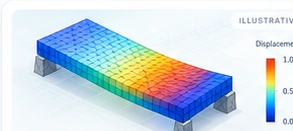
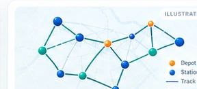
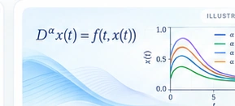
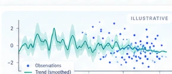
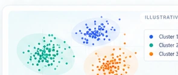
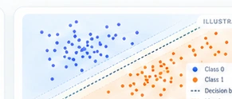

My Projects.
Research and machine-learning projects from my CV.
Select a card to explore its methods and results.
Research Projects
04 COMPLETED
RBF Collocation for Fractional PDEs
Numerical solutions of time-fractional PDEs, including FitzHugh–Nagumo and Burgers-type equations.

Finite Element Analysis of Deep Beams
Reinforced-concrete beam simulation, reinforcement configurations, and load behavior.

Railway Resource Allocation Optimization
A hybrid PDEA–sequential approach to allocating staff across 44 stations.

Fractional & q-Fractional Equations
Existence, uniqueness, and Hyers–Ulam-type stability analysis.
Machine Learning Course Projects
04 COMPLETED
Scientific Programming & Data Analysis with Julia
Modular scientific code, visualizations of Old Faithful and neural-spike data.

Unsupervised Learning & K-Means Clustering
Batch and online algorithms, Monte Carlo experiments, and RGB image segmentation.

Linear & Polynomial Regression with Regularization
Regression experiments, generalization, overfitting, and model evaluation.

Supervised Classification & Decision Boundaries
KNN and least-squares classification on synthetic nonlinear datasets.
Current Project
01 IN PROGRESSImages are conceptual illustrations, not original experiment figures. The linked project pages contain documented information, and actual figures can be added later.